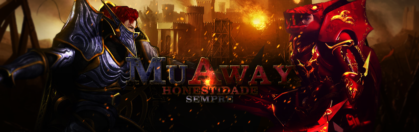

O Começo
Quando eu era mais jovem, minha jornada nos jogos eletrônicos começou de uma maneira bastante peculiar. Após as aulas, eu pegava minha bicicleta e pedalava pela cidade até chegar à lan house do bairro. Naquela época, o acesso à internet em casa era um luxo distante para muitos de nós.
Entre a fumaça de cigarros e os cliques rápidos dos teclados, entrei em um mundo completamente novo. Meus olhos se iluminaram diante das telas coloridas e dos sons vibrantes emanando das máquinas. Foi lá, naquela pequena sala escura e cheia de computadores, que meu fascínio pelos jogos eletrônicos nasceu.
Primeiro Jogo
E, então, aconteceu: meu primeiro encontro com o mundo de Muaway. Aquela aventura medieval, com seus heróis e criaturas fantásticas, capturou minha imaginação instantaneamente. Lembro-me vividamente da emoção pulsante ao explorar terras desconhecidas, enfrentar desafios e me unir a outros jogadores em busca de glória.
Aquela experiência marcou o início de uma jornada que moldaria meu amor por jogos eletrônicos. Desde então, cada nova descoberta, cada novo jogo, foi um portal para histórias incríveis, habilidades desafiadoras e amizades virtuais.
Hoje, olhando para trás, percebo como aqueles momentos na lan house, indo de bicicleta todas as tardes após a escola, e as primeiras aventuras em Muaway foram fundamentais para me transformar no apaixonado por jogos eletrônicos que sou hoje.